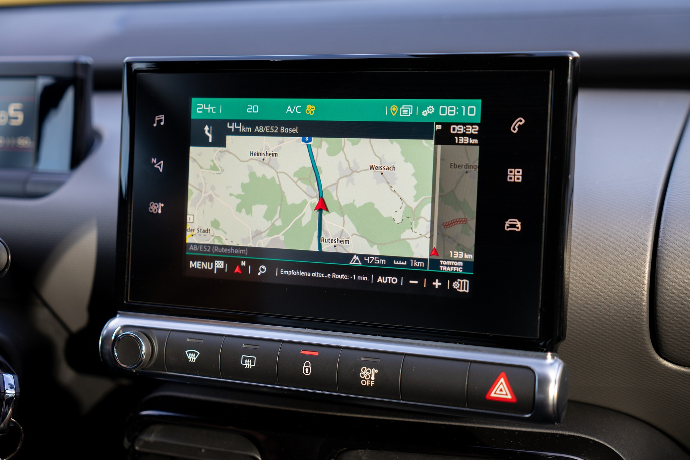

Overview
Our tracking systems are designed to keep you connected to what matters most — your vehicles, loved ones, and valuable assets. With Nuelex Energy Tech, tracking is not just about knowing where something is, but also understanding how it’s moving, why it’s moving, and ensuring it’s moving safely.
Whether you manage a fleet of delivery trucks, want to ensure your children arrive safely at school, or need to keep an eye on valuable company equipment, our solutions deliver real-time visibility, insightful analytics, and actionable alerts directly to your device.
We go beyond location pins on a map — we help you reduce risks, optimize routes, and prevent losses before they happen. Our systems are trusted by logistics companies, corporate fleets, and individual users across Kenya for their reliability and accuracy.
Features
- Live GPS tracking with high accuracy – Monitor the exact position of your assets with precision down to a few meters, updated every few seconds.
- Geo-fencing alerts – Create custom boundaries and get instant notifications when a vehicle or person enters or exits.
- Driver behavior monitoring – Track speed, sudden braking, and route deviations to improve safety and compliance.
- Trip history playback – Review detailed route histories for accountability, audits, and training.
- Mobile and desktop dashboards – Access your data anywhere, anytime through easy-to-use interfaces.
Applications
Our tracking solutions are versatile and adaptable to a variety of needs:
- Fleet Managers – Optimize delivery times, reduce fuel consumption, and monitor driver performance.
- Parents – Ensure children reach destinations safely and receive alerts for unexpected route changes.
- Logistics Companies – Track high-value shipments and improve customer satisfaction with real-time updates.
- Individuals – Keep an eye on personal vehicles or assets to prevent theft or unauthorized use.
With Nuelex Energy Tech Tracking, you gain control, efficiency, and peace of mind — all in one intelligent, AI-powered system.